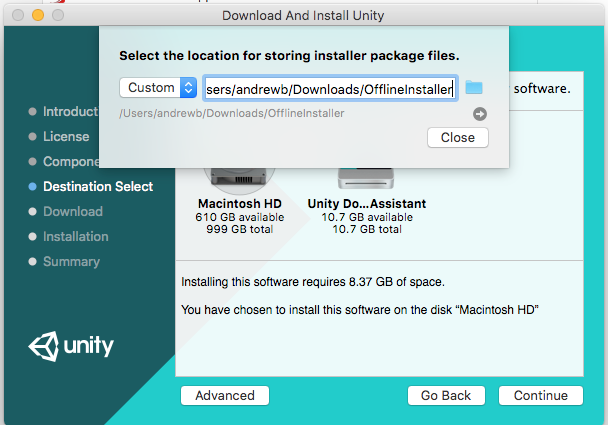
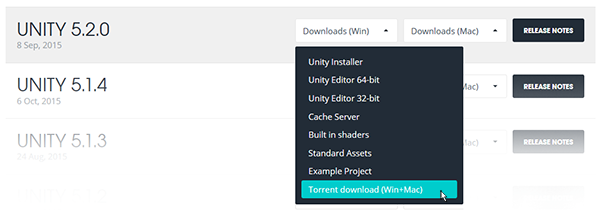

Installing Unity from the command line
If you want to automate the deployment of Unity in an organization, you can install the Editor and other components from the command line. The components are normal installer executable programs and packages which you can use to automate the deployment of Unity.
To download the components, you use the Unity installer to download the Unity components to a folder on your computer.
- Download and run the installer. Release versions of the installer are available from the the Unity download archive. For Prerelease versions of the installer, see the Beta programs page.
- In Choose Components, select all of the components for which you are automating deployment.
- In Choose Download and Install locations, click the Download to radio button.
- Enter a location in which to store the component installers.
Finish the install.

Navigate to the download location you specified. In the folder, you will find the installer files for the components you selected and a script file (install.bat on Windows or install.sh on Linux or OS X) that you can run to install the components.

To install Unity on another computer using the downloaded components, copy the contents of the folder to the destination computer and execute the install script.
Installing individual Unity components on Windows from the command line
Use the following options when installing the Editor and other components from the command line on Windows.
Note: Installer command line arguments are case-sensitive.
Unity Editor install
| Command | Details |
|---|---|
| /S | Performs a silent (no questions asked) install. |
| /D=PATH | Sets the default install directory. Useful when combined with the silent install option. The default folder is C:\Program Files (x86)\Unity (32-bit) or C:\Program Files\Unity (64-bit). |
Example:
UnitySetup64.exe /S /D=E:\Development\Unity
This example installs Unity silently to a E:\Development\Unity folder, which will be the root of the Unity installation. In this case, the Editor executable is installed in E:\Development\Unity\Editor\Unity.exe. The default install directory must be the last argument on the command line. The supplied path must not be surrounded by quotes, even if the path contains spaces.
Unity Editor uninstall
To perform a silent uninstall, run Uninstall.exe /S from the ommand line or a script.
Note: Although the process finishes right away, there is a delay before the files are actually removed. This is because the uninstaller is copied to a temporary location to enable it to remove itself. Make sure that the working directory is not inside the Unity install location. If it is, the uninstaller will be unable to remove the folder.
Standard Assets install
To silently install Standard Assets:
UnityStandardAssetsSetup.exe /S /D=E:\Development\Unity
Note: If specifying a folder, use the Unity root folder (that is, the folder containing the Editor folder, and not the folder in which Unity.exe is installed.)
Example Project install
To silently install the Example Project, use:
UnityExampleProjectSetup.exe /S /D=E:\Development\Unity
Note: The default folder is C:\Users\Public\Documentation\Unity Projects\Standard Assets Example Project.
Installing Unity on OS X from the command line
The individual Unity installers are provided as .pkg files, which can be installed using the installer command, as described below.
Unity Editor install
To install the Editor into a /Applications/Unity folder on the specified target volume, enter:
sudo installer [-dumplog] -package Unity.pkg -target /
Standard Assets install
To install the Standard Assets into a /Applications/Unity/Standard Assets folder on the specified volume, enter:
sudo installer [-dumplog] -package StandardAssets.pkg -target /
Example Project install
To install the Example Project into a /Users/Shared/Unity/Standard-Assets folder on the specified volume, enter:
sudo installer [-dumplog] -package Examples.pkg -target /
Torrent download
If you prefer to download Unity via a BitTorrent client, you can download get a torrent link from the Unity download archive page. Not all versions have a torrent download. If a version is available to download as a torrent, the option is presented as Torrent download (Win+Mac) in the Downloads dropdown menu.

Installing several versions at once
You can install multiple versions of Unity on the same computer.
On a Mac, the installer creates a folder called Unity, and overwrites any existing folder with this name. To install more than one version of Unity on your Mac, rename the existing Unity folder before installing another version.
On a PC, the install folder is always named Unity X.Y.Z[fp]W, where the f is for an official release, and p is used to mark a patch release.
We strongly recommend that if you rename a Unity folder, you name the new folder logically (for example, add the version number to the end of the name). Any existing shortcuts, aliases and links to the offline docs might no longer point to the old version of Unity. This can be particularly confusing with the offline docs; if you suddenly find that browser bookmarks to the offline docs no longer work, then check that they have the right folder name in the URL.